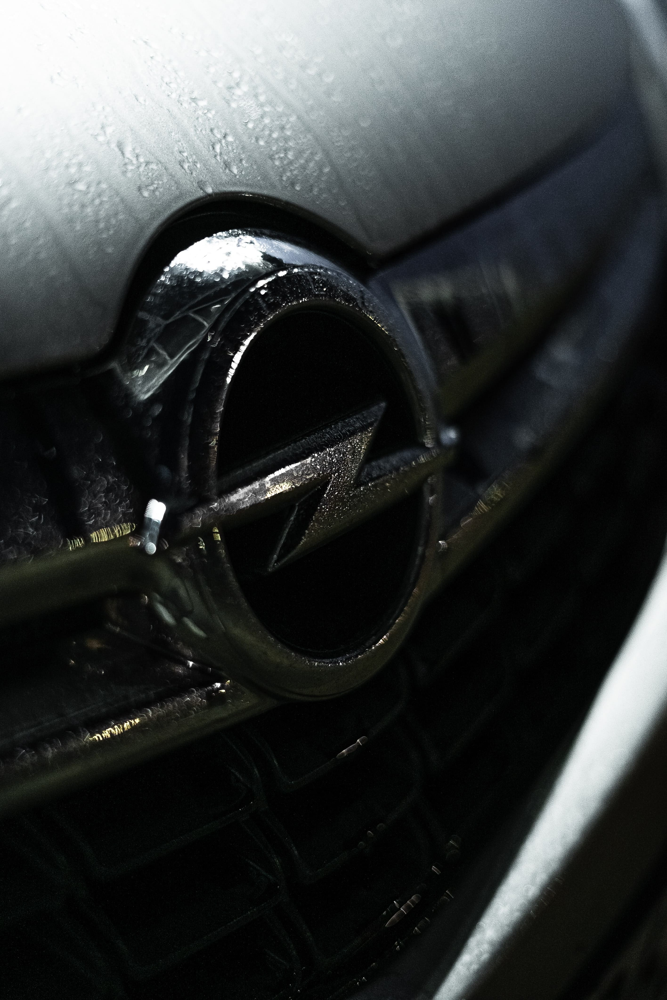
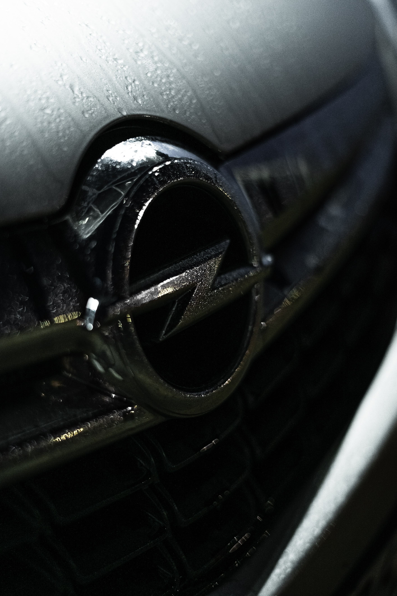
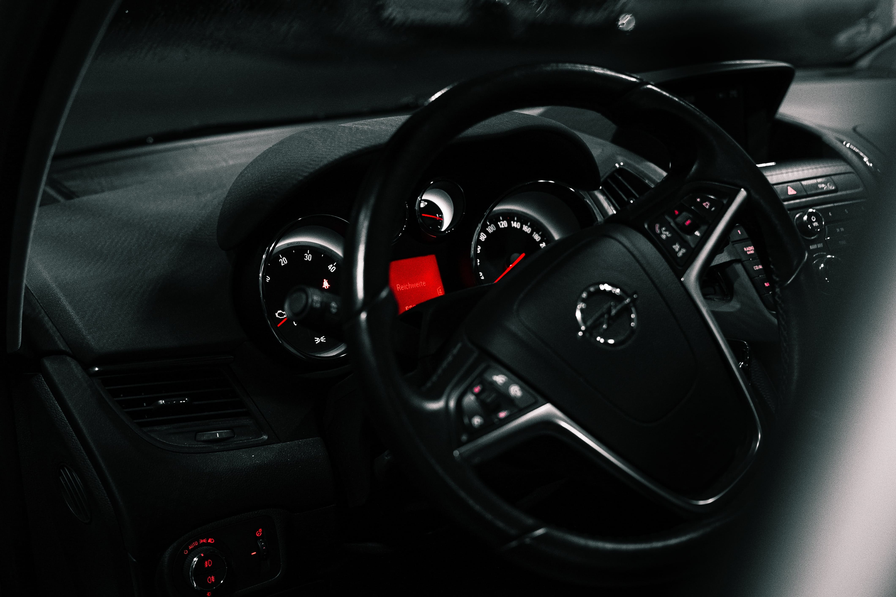
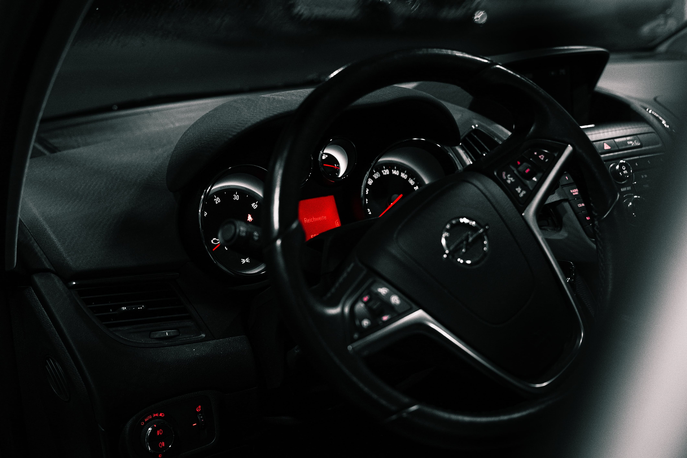

Opel Zafira
Backgroundinfos
In der Corona Zeit hatten mein Bruder und ich ziemliche Langweile und haben uns ganz spontan das Auto genommen und sind zu einer Waschanlage in der Nähe gefahren. Das eigentliche
Ziel war, ein paar Bilder zu shooten, aber auch die Idee ein Video zu drehen, war sehr spontan.
Beim Sichten des Materials war mir nicht klar, ob ich überhaupt was daraus machen kann. 3-4 Monate später hab ich mich nochmal dran gesetzt und einfach mal drauf los geschnitten.
Das Ergebnis gibts auf Youtube.
Kamera: @exportlater, BlackDayz
Schnitt, Grading: BlackDayz
 

 
